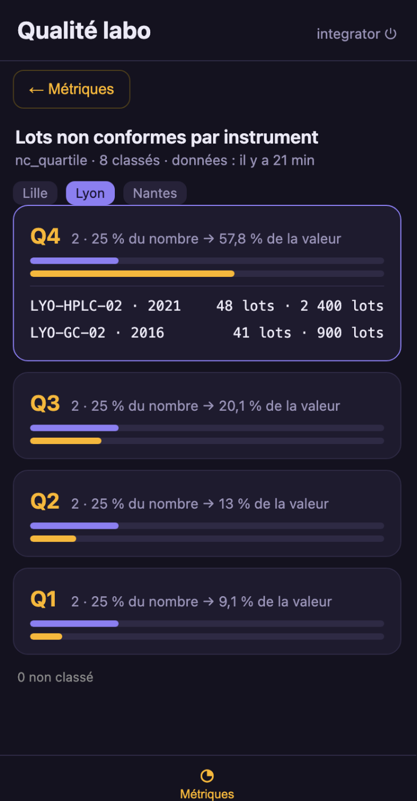

Trois LIMS legacy: le quart des instruments qui fait la moitié des lots non conformes
Objectif Savoir, dans chaque site, quels instruments appartiennent au quartile supérieur du nombre de lots non conformes, et les revoir en premier.
Trois sites exportent chaque mois leur relevé qualité depuis leur LIMS. Tout le monde pense que les instruments à revoir sont les plus anciens. Six mois de relevés n'ont encore jamais été comparés, site par site.
- un quartile par nombre d'instruments, calculé dans chaque site
- les lots analysés à côté des lots non conformes
- le plus ancien instrument de chaque site: en Q1
releve;site;instrument;mise_en_service;mois;lots_analyses;lots_non_conformes LYO-HPLC-01-2026-05;Lyon;LYO-HPLC-01;2009;2026-05;100;2 LYO-HPLC-01-2026-06;Lyon;LYO-HPLC-01;2009;2026-06;100;2 LYO-HPLC-01-2026-07;Lyon;LYO-HPLC-01;2009;2026-07;100;2 LYO-HPLC-01-2026-08;Lyon;LYO-HPLC-01;2009;2026-08;100;1 LYO-HPLC-01-2026-09;Lyon;LYO-HPLC-01;2009;2026-09;100;1 LYO-HPLC-01-2026-10;Lyon;LYO-HPLC-01;2009;2026-10;100;1 LYO-HPLC-02-2026-05;Lyon;LYO-HPLC-02;2021;2026-05;400;8 LYO-HPLC-02-2026-06;Lyon;LYO-HPLC-02;2021;2026-06;400;8 LYO-HPLC-02-2026-07;Lyon;LYO-HPLC-02;2021;2026-07;400;8 LYO-HPLC-02-2026-08;Lyon;LYO-HPLC-02;2021;2026-08;400;8 LYO-HPLC-02-2026-09;Lyon;LYO-HPLC-02;2021;2026-09;400;8 LYO-HPLC-02-2026-10;Lyon;LYO-HPLC-02;2021;2026-10;400;8 LYO-GC-01-2026-05;Lyon;LYO-GC-01;2008;2026-05;84;1 LYO-GC-01-2026-06;Lyon;LYO-GC-01;2008;2026-06;84;1 LYO-GC-01-2026-07;Lyon;LYO-GC-01;2008;2026-07;83;1 LYO-GC-01-2026-08;Lyon;LYO-GC-01;2008;2026-08;83;1 LYO-GC-01-2026-09;Lyon;LYO-GC-01;2008;2026-09;83;1 LYO-GC-01-2026-10;Lyon;LYO-GC-01;2008;2026-10;83;1 LYO-GC-02-2026-05;Lyon;LYO-GC-02;2016;2026-05;150;7
… 113 lignes de plus
manifests/10-lims.yaml
apiVersion: connectors.lumnik.io/v1kind: Connectormetadata: name: scenario-labo-a connector_type: csv-file scopes: [labo-a]spec: transport: kind: sftp host: host.docker.internal port: 2233 user: qualite path: /exports/releves-qc.csv password_env: SCENARIO_LABO_A_SFTP # The fingerprint the export server presents, read out of band (ssh-keyscan | ssh-keygen -lf -). host_key_fingerprint: "SHA256:FINGERPRINT_READ_AT_REPLAY" parser: has_header: true delimiter: ";" encoding: UTF-8 after_process: none mapping: cell: - parse-number: { column: lots_analyses, decimal-separator: "." } - parse-number: { column: lots_non_conformes, decimal-separator: "." }manifests/20-releve.yaml
kind: Entityname: ScenarioLaboRelevesAmatch: [releve]scopes: [labo-a]sources: - table: t_scenario_labo_a map: releve: releve site: site instrument: instrument mise_en_service: mise_en_service mois: mois lots_analyses: lots_analyses lots_non_conformes: lots_non_conformesmanifests/30-quartile.yaml
apiVersion: apps.lumnik.io/v1kind: Metricmetadata: name: scenario_labo_quartile_aspec: scope: labo-a title: Lots non conformes par instrument description: Le quartile de chaque instrument, dans son site, par nombre de lots non conformes sur six mois. source: entity: ScenarioLaboRelevesA by: [site, instrument, mise_en_service] measures: lots_nc: { sum: lots_non_conformes, unit: lots } lots: { sum: lots_analyses, unit: lots } across: within: [site] # an instrument is compared with its own site's, never across sites nc_quartile: { quantile: lots_nc, bounds: [25, 50, 75], labels: [Q4, Q3, Q2, Q1] }$ lm apply -f 10-lims.yaml
Applied connector "scenario-labo-r1127" — 1 endpoint
$ lm connector run scenario-labo-r1127
run scheduled: 21dca6ba-f449-47d9-8d16-c4e88c383ff2
$ lm run get 21dca6ba-f449-47d9-8d16-c4e88c383ff2 --wait-evaluated
ID CONNECTOR ENDPOINT STATUS IN OUT SKIPPED DEAD-LETTERS STARTED ENDED EVALUATED
21dca6ba scenario-labo-r1127 default Completed 132 132 0 0 2026-11-27 19:55 2026-11-27 19:56 yes
$ lm entity apply -f 20-releve.yaml
Applied entity "ScenarioLaboRelevesR1127" → connector."v_scenariolaborelevesr1127"
$ lm metric apply -f 30-quartile.yaml
Applied metric "scenario_labo_quartile_r1127" (definition version 1)- run
- IN 132 · OUT 132 · cell errors 0
preuves: replay.log, 00-check-quartiles.txt, 01-run.json, 05-top-quarter.json, 04-metric.txt · transform v1
$ lm metric get scenario_labo_quartile_r1127
Lots non conformes par instrument
SITE INSTRUMENT MISE_EN_SERVICE LOTS_NC LOTS NC_QUARTILE NC_QUARTILE_BEFORE NC_QUARTILE_COUNT NC_QUARTILE_COUNT_SHARE NC_QUARTILE_SHARE NC_QUARTILE_POPULATION NC_QUARTILE_UNCLASSIFIED _DISPUTED
Lille LIL-GC-01 2006 4 300 Q1 83.3333333333333333 1 16.6666666666666667 3.8461538461538462 6 0 0
Lille LIL-HPLC-01 2014 19 900 Q3 33.3333333333333333 1 16.6666666666666667 18.2692307692307692 6 0 0
Lille LIL-ICP-01 2019 33 1500 Q4 0 2 33.3333333333333333 56.7307692307692308 6 0 0
Lille LIL-KF-01 2012 26 420 Q4 16.6666666666666667 2 33.3333333333333333 56.7307692307692308 6 0 0
Lille LIL-MS-01 2021 13 520 Q2 50.0000000000000000 2 33.3333333333333333 21.1538461538461538 6 0 0
Lille LIL-UV-01 2016 9 600 Q2 66.6666666666666667 2 33.3333333333333333 21.1538461538461538 6 0 0
Lyon LYO-GC-01 2008 6 500 Q1 87.5000000000000000 2 25.0000000000000000 9.0909090909090909 8 0 0
Lyon LYO-GC-02 2016 41 900 Q4 12.5000000000000000 2 25.0000000000000000 57.7922077922077922 8 0 0
Lyon LYO-HPLC-01 2009 9 600 Q2 62.5000000000000000 2 25.0000000000000000 12.9870129870129870 8 0 0
Lyon LYO-HPLC-02 2021 48 2400 Q4 0 2 25.0000000000000000 57.7922077922077922 8 0 0
Lyon LYO-ICP-01 2012 14 700 Q3 37.5000000000000000 2 25.0000000000000000 20.1298701298701299 8 0 0
Lyon LYO-KF-01 2010 11 400 Q2 50.0000000000000000 2 25.0000000000000000 12.9870129870129870 8 0 0
Lyon LYO-MS-01 2018 17 650 Q3 25.0000000000000000 2 25.0000000000000000 20.1298701298701299 8 0 0
Lyon LYO-UV-01 2019 8 800 Q1 75.0000000000000000 2 25.0000000000000000 9.0909090909090909 8 0 0
Nantes NTE-GC-01 2007 7 450 Q1 75.0000000000000000 2 25.0000000000000000 8.7591240875912409 8 0 0
Nantes NTE-GC-02 2015 29 800 Q4 12.5000000000000000 2 25.0000000000000000 48.1751824817518248 8 0 0
Nantes NTE-HPLC-01 2011 37 1100 Q4 0 2 25.0000000000000000 48.1751824817518248 8 0 0
Nantes NTE-HPLC-02 2020 12 1300 Q2 50.0000000000000000 2 25.0000000000000000 16.0583941605839416 8 0 0
Nantes NTE-ICP-01 2013 10 600 Q2 62.5000000000000000 2 25.0000000000000000 16.0583941605839416 8 0 0
Nantes NTE-KF-01 2018 5 350 Q1 87.5000000000000000 2 25.0000000000000000 8.7591240875912409 8 0 0
Nantes NTE-MS-01 2017 22 700 Q3 25.0000000000000000 2 25.0000000000000000 27.0072992700729927 8 0 0
Nantes NTE-UV-01 2022 15 950 Q3 37.5000000000000000 2 25.0000000000000000 27.0072992700729927 8 0 0
lots_nc: lots
lots: lots
nc_quartile_before: %
nc_quartile_count_share: %
nc_quartile_share: %
lots_nc = sum(lots_non_conformes), by site, instrument, mise_en_service
lots = sum(lots_analyses), by site, instrument, mise_en_service
nc_quartile = quantile(lots_nc, bounds [25, 50, 75], labels [Q4, Q3, Q2, Q1]) within site, prior headcount, null unclassified
data as of: 2026-11-27T18:56:00.090898Z (last completed run)- Lille · Q4
- LIL-ICP-01 (2019): 33 non-conforming lots / 1500 analysed
- Lille · Q4
- LIL-KF-01 (2012): 26 non-conforming lots / 420 analysed
- Lyon · Q4
- LYO-HPLC-02 (2021): 48 non-conforming lots / 2400 analysed
- Lyon · Q4
- LYO-GC-02 (2016): 41 non-conforming lots / 900 analysed
- Nantes · Q4
- NTE-HPLC-01 (2011): 37 non-conforming lots / 1100 analysed
- Nantes · Q4
- NTE-GC-02 (2015): 29 non-conforming lots / 800 analysed
- Lille · Q4 share
- 56.73 %
- Lyon · Q4 share
- 57.79 %
- Nantes · Q4 share
- 48.18 %
- check_quartiles.py
- Lille LIL-ICP-01 · Lille LIL-KF-01 · Lyon LYO-GC-02 · Lyon LYO-HPLC-02 · Nantes NTE-GC-02 · Nantes NTE-HPLC-01
preuves: replay.log, 00-check-quartiles.txt, 01-run.json, 05-top-quarter.json, 04-metric.txt · transform v1

Limites
- Ce n'est pas un taux: le quartile compte les lots non conformes. Un instrument très utilisé peut être en Q4 pour son volume, la carte le montre sans le corriger.
- Aucun site n'est comparé à un autre: chaque site reste sa propre population.
- Pas de tendance: six mois en un total. Les instruments entrés ou sortis de Q4 attendent l'historique des métriques.
- Pas de cause: lumnik classe ce que disent les relevés, le laboratoire cherche pourquoi.
- Trois sites et 22 instruments synthétiques.
Ce scénario tourne sur lumnik Open, gratuit et open source.
Essayer lumnik Open →